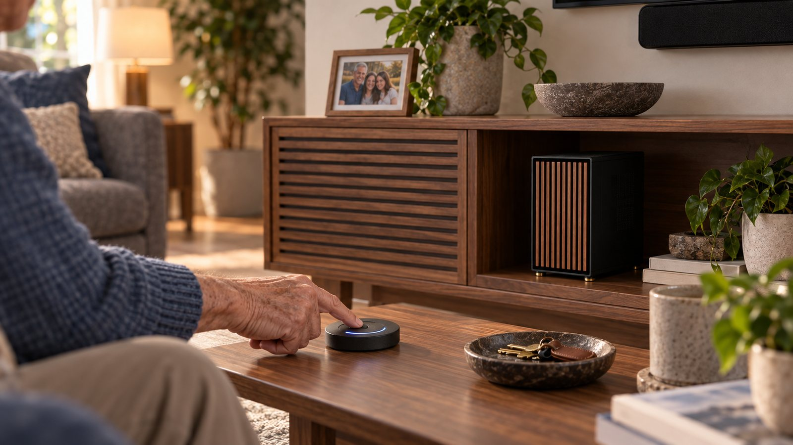

Story One · Ron and Maya at Home
Sovereign AI
Sovereign AI
Download chapterRon and Maya at Home
Download full story“Well, Livonne Care isn’t in the cloud the way Alexa is,” Maya says. “It’s right here in your house.”
She points toward a small box tucked into the corner.
“Oh,” Ron says. “I was wondering what that one was.”
“That’s the Livonne Hub. Your assistant runs there. Your memory is stored there. Everything these devices notice is processed there first.”
“So it is watching me.”
“All those sensors allow Livonne to use what’s called ambient AI. The microphones and motion sensors stay available so the system can notice when you ask for something—or when you need help but don’t ask.”
Ron looks around at the devices again.
“That sounds like watching me.”
“It would be if someone were sitting in a room staring at the feeds. No one is. The Hub handles everything here, decides whether anything important happened, and throws away the raw recordings it doesn’t need.”
Maya brings the living-room device back onto the screen.
The millimeter-wave sensor can detect a sudden change in Ron’s posture without keeping a video camera running continuously. If it senses what might be a fall, Livonne can briefly activate the camera to understand what happened.
“If you’re crawling around in your bathrobe looking for the remote, it sees that you’re fine and stops there,” Maya says. “The video is deleted. I never see it. Nobody does.”
“That is a very specific example.”
“It’s an extremely likely example.”
Ron accepts that.
If Ron has actually fallen, Livonne responds.
“Ron, it looks like you may have fallen. Are you okay?”
If he answers, the system helps him handle the situation. If he cannot answer, it follows the emergency plan Ron and Maya established together. It tries the approved family contacts. If no one responds—or if the situation appears immediately dangerous—it escalates.
In a genuine injury, Livonne may preserve the relevant moments surrounding the fall instead of deleting them. Ron and Maya can decide whether that information would help a doctor understand what happened.
“That’s the exception,” Maya says. “It keeps something when keeping it could actually help you.”
The same rule applies if someone enters the house unexpectedly. Livonne can check whether the visitor belongs there and contact the people Ron has authorized. If someone breaks in, it can preserve the evidence and contact emergency services according to Ron’s plan.
In that moment, the cameras are not watching Ron.
They are protecting him.
Most moments are much smaller.
Ron might walk through the living room and mutter that he wants to watch the football game next Sunday. Livonne can remember that the game matters to him without saving a recording of everything he said before and after it.
It keeps the useful memory.
The rest disappears.
That is the first layer of sovereign AI. The household’s raw signals are interpreted inside the household. No remote aide is watching Ron’s living room. No company needs a permanent recording of his day. The Hub keeps what helps Livonne support him and discards what has no reason to survive.
But Livonne does not only protect the information created inside Ron’s home.
It also stands between Ron and the open internet.
“If you ask Livonne to find you a new fishing rod,” Maya says, “it can search stores and compare prices without telling every website that Ron is the person looking.”
“So the fishing-rod store doesn’t know it’s me.”
“Not while you’re shopping. If you decide to buy something, Livonne gives the store what it actually needs to complete the order. It doesn’t hand over the rest of your life along with it.”
That means one casual search does not have to follow Ron into his social feeds for the next month. Livonne can reduce the authentic signal advertisers and data brokers use to assemble a profile of him.
Where a low-trust service insists on a name but has no legitimate need for Ron’s legal identity, Livonne can use a stable stand-in instead.
“So now I have an alias?”
“You can have several.”
“I’ve always wanted an alias.”
The joke has a practical edge.
If a salesperson or scammer later calls asking for one of those stand-in names, Ron immediately knows where the information came from—and that the caller is not someone he trusts.
Livonne can also introduce harmless variation into low-stakes interactions so the outside world has a harder time assembling one clean, reliable model of Ron. Not where the truth affects his rights, safety, eligibility, or the validity of a transaction. If he is renewing his vehicle registration, Livonne uses his real information because the state legitimately needs it.
But a shopping site does not need to know everything the state knows.
“The system knows the real you,” Maya says. “The outside world gets only what the task requires.”
Ron looks back at the Hub.
“So it protects what it learns here, and it gives the internet less to learn out there.”
“Exactly.”
“And all of this belongs to me?”
“Yes,” Maya says. “That’s the difference.”